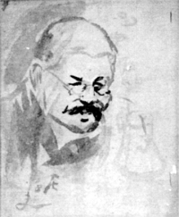

子規画「左千夫像」
（明治33年頃）
（明治33年頃）
吾が正岡先生は、俳壇の偉人であって、そしてまた歌壇の偉人である。万葉集以降千有余年間に、ただ一人あるところの偉人であるのだ。
しかるに先生が俳壇の偉人であると云うことは、天下知らざるものなき程でありながら、歌壇の偉人であると云うことを知っているものは、天下幾人も無いと云うに至っては実に遺憾と云わねばならぬ。
先生の訃音が一度伝われば、東都の新紙は異口同音に哀悼の意を表し、一斉に先生が俳壇における偉業を讃した。これはもとより当然の事であえて間然すべきではないが、ただ一人として先生の歌壇における功績に片言も序し及ばなかったのはいかにも物足らぬ感に
先生の俳句における成功は、始め近親数人に及ぼし遂に天下に広充したので、北は北海道の果てより、南は九州の隅に至るまで、いやしくも文学に志す者で日本派の俳句、子規派の俳句を知らぬ者はないくらいであるから、俳句を知らぬ人でもその実績の上から、先生が俳壇の偉人であると云う事は知れる訳であるが、歌の方であると根岸派の歌と云うても、区域が極めて狭いので、真に歌を解せぬ素人の眼から、その偉大なることの分らぬのも、あながち無理ではない、しかしまた一歩進んで考えてみると、世人が、日本文学の精粋と歌わるる歌に対して解釈力の欠乏せるに驚かざるを得ないのである。たとい自ら作ると云うことは出来なくとも、その議論をみてその製作をみたならば、是非の判断くらいはつきそうなものじゃあるまいか。世上多くの文士が先生の俳人たる価値をのみ解して、歌人たるの価値を少しも解せぬと云うに至っては、吾々は多大なる不平が包みきれぬのである。
先生の俳句における成功と歌における成功と先生一個身の上よりせば、成功の価値に少しの相違もないのである。一は成功の余沢を広く他に及ぼし、一は未だ広く余沢を及ぼさぬと云うに過ぎぬ、俳句はその流れを酌む人が多いから偉大で歌はその流れを酌む人が少いから注意に価せぬとはあまりに浅薄なる批評眼と云わねばならぬ。
しからば、正岡が歌壇の偉人であるというはどう云うわけかと云う問が起るであろう。これに対する答は、俳壇の偉人を説明する様に簡単でない。実績に乏しき歌壇の偉人を説明しようには勢い歌そのものに依って判断せねばならぬ。すなわちその作歌及び歌論について価値を定めねばならぬ。しかしながらかくのごときことをなすは今その場合でないと思う。
先生が歌の研究を始めたのは、たしか明治二十九年の夏からである。年を経る僅かに七年一室に病臥して、自宅十歩の庭でさえ充分には見ることのできぬ身を以て、俳壇を支配するの余力を以て、今日の成功を見たる実に偉と云わねばならぬ。親しく教えを受けて研究に預れるは僅かに七八人に過ぎぬ。しかもこの七八人の根岸派同志が今日の歌壇にいかに重きをなすか、成功の確然たるものがなくて、どうしてしかることを得べきか。
国家とその起源を同じくしているところの歌は、また皇家とその隆替を同じくしている。皇威衰えて歌もまた衰えた、万葉以降歌の奮わぬと云うのも、考えてみると不思議と思う程である。思うに世道人心と深く関係するところに相違ないのであろう、帝皇の稜威が、全く上代に復して、歌壇に偉人の顕れたと云うも、偶然のようで決して偶然ではないのである。
先生には一人の愛子があった。当年二十四歳の男で
それはだれだ、下総結城の人長塚
どっちかと云うと、先生は理性的の人であった。いやそうでない、情的方面は尋常で理性の方面は非常であるから、誰の眼にもその理性の強い方面ばかりすぐ分るので、非常に理性の勝った人で全く智的の人の様に受け取られた様だ。明敏精察でそして沈着冷静という態度で、常に人に接するから逢う人は必ず畏敬の念を起すと同時に容易に近づく事の出来ぬという趣があった。かくいう吾輩も、この人は師として交わるべき人で友として交わることは容易に出来ぬ人であるなどと思うたことは幾度かあった。先生自らもその性質をちゃんと承知しておられ、或る時女郎買い話が出て大いに笑ったことがある。先生いう、僕も書生時分には月に一回位は往かねばならぬ様に往ったことがあるが、同じ奴の所へ二度往ったことは無かった。どうしてそうかと云うと僕は
先生が理性の強かったことはこの一言で分る。そんな訳であるから、遠くに先生を敬慕した人はもちろん非常に多かったに相違ないが、近づいて親密にした人は割合にすくない。それには病気や何かでいろいろな事情もあったろうが、非常に理性に
世間の普通からいうと理性の著しくまさった人は情に薄いのが当り前であるのに、一人先生は普通以上であるという証拠として、長塚節が出てきた次第じゃ。赤の他人であって親の様に思われ子の様に愛するということは、無情な人の夢にも知ったことではない、先生と長塚との間柄は親子としてはあまりに理想的で、師弟としてはあまりに情的である、ゆえに予はこれを理想的愛子と名附けた。
節が始めて先生に逢うたのは明治三十二年の初夏、根岸庵の杉屏の若芽がふいた頃である。節はその以前から「日本」の愛読者で先生に対しては見ぬ恋にこがれておったとのことで、夢に見た先生と逢って見た先生とが同じであったというて当時節はしきりにそれを不思議にしていた。
長塚が始めて先生に逢った時、長塚は先生の俳句及び歌の、自分が面白く感じた数十首をことごとく記臆していてこれを暗誦したのには、先生も一驚を喫したそうで、一体長塚は記臆のよい男であるが、先生を慕うこと深くなければ、決してそんなことが出来るものでない。第一回の会見既に尋常でない。長塚が渾身情的無邪気に
こんなことは先生には異例である様だが、無邪気な長塚に対したからと云うばかりでなく、やはり先生が決して冷性な人でないと云うところから出た結果であろう。
爾来長塚は東京に在ってはもちろん、郷里にある時でも一日も先生ということは脳中を離れぬ様であった。その郷里は汽車場までは七八里もあるという
先生が節に教ゆるは歌の上ばかりではない。人間と云うものの総ての上について噛んで含める様に教えた様であった。随分叱り飛ばすこともある。長塚が先生に物を乞うことがある
しからば長塚は真の児供かと云うに決してそうでない。歌も同人間に一頭地を抜いている。処世の道においても、親父なる人の少しく失敗し家産の整理に任じて処理を誤らぬ様である。してみれば先生が長塚を愛したのも唯情一辺でないことも分る。去年の秋であった、長塚と予と折よく会合した時に先生から長塚にやった歌は、よく両者の
喜節見訪
竹の里人
下総のたかし来たれりこれの子は蜂屋大柿吾にくれし子
下ふさのたかしはよき子これの子は虫喰栗をあれにくれし子
春ことにたらの木の芽をおくりくる結城のたかし吾は忘れず
多くの場合に人に畏敬せられた先生にして、こんなことの有ったのは世人も少しく意外に感ずるのであろう。（歌人・作家）
（『日本』明治35・10・３、４／『子規全集・別巻２』講談社、75・９）